Coloque los NUEVOS tapones de expansión del refrigerante.
Asegúrese de que los NUEVOS tapones de expansión del refrigerante están colocados a la profundidad adecuada.
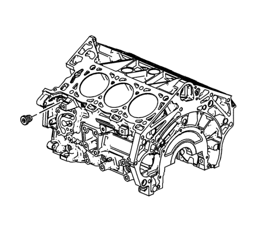
Ponga sellarroscas sobre las roscas del tapón roscado M20 del conducto de aceite del lado izquierdo. Consulte Adhesivos, líquidos, lubricantes y selladores para el sellador recomendado.
Coloque el tapón roscado M20 del conducto de aceite del lado izquierdo y apriételo a 31 N·m (23 lib. pie).
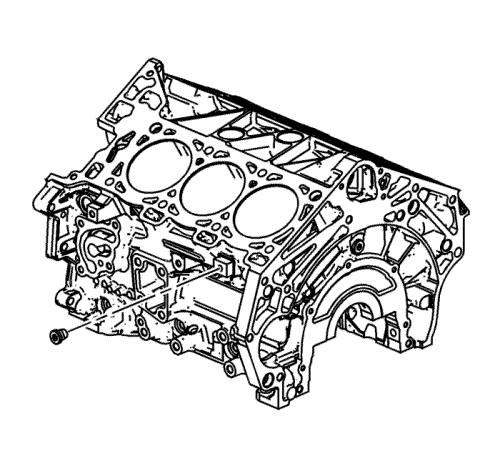
Ponga sellarroscas sobre las roscas del tapón roscado M14 de drenaje del refrigerante del lado izquierdo. Consulte Adhesivos, líquidos, lubricantes y selladores para el sellador recomendado.
Coloque el tapón roscado M14 de drenaje del refrigerante del lado izquierdo y apriételo a 31 N·m (23 lib. pie).
Coloque el tapón roscado M14 del conducto de aceite trasero y apriételo a 31 N·m (23 lib. pie).
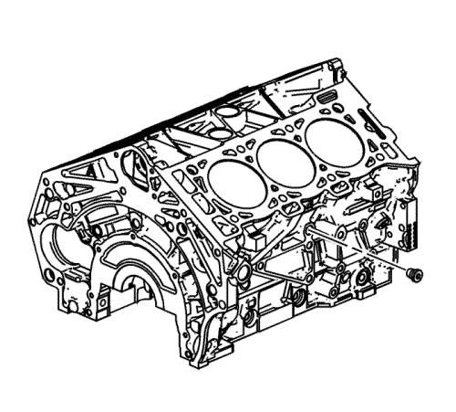
Ponga sellarroscas sobre las roscas del tapón roscado M14 de drenaje del refrigerante del lado derecho. Consulte Adhesivos, líquidos, lubricantes y selladores para el sellador recomendado.
Coloque el tapón roscado M14 de drenaje del refrigerante del lado derecho y apriételo a 31 N·m (23 lib. pie).
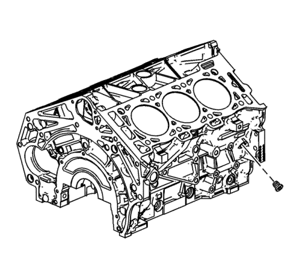
Ponga sellarroscas sobre las roscas del tapón roscado M14 del conducto de aceite del lado derecho. Consulte Adhesivos, líquidos, lubricantes y selladores para el sellador recomendado.
Coloque el tapón roscado M14 del conducto de aceite del lado derecho y apriételo a 31 N·m (23 lib. pie).
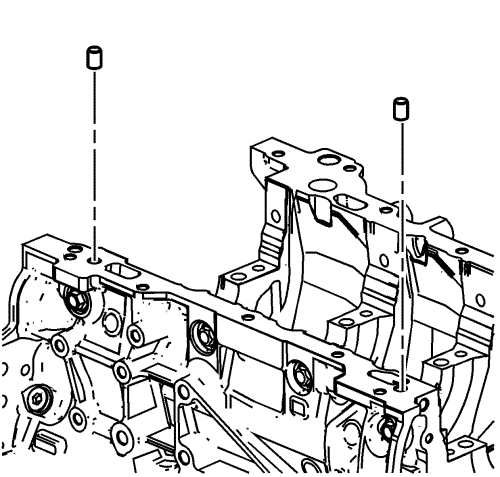
Coloque las espigas de alineación entre el bloque motor y el cárter de aceite.
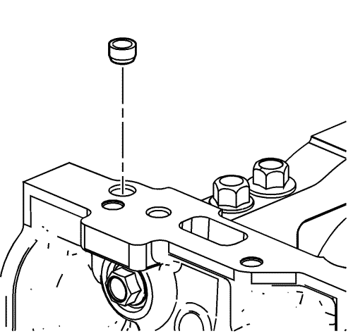
Coloque el NUEVO tapón de expansión del conducto de aceite del carril del cárter de aceite delantero derecho.
Asegúrese de que el NUEVO tapón de expansión del conducto de aceite del carril del cárter de aceite delantero derecho está colocado a la profundidad adecuada.
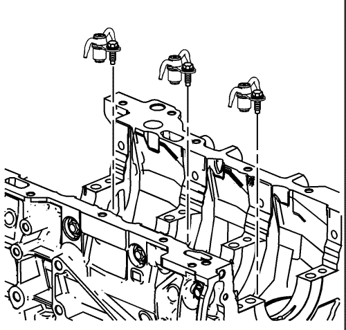
Monte los surtidores de aceite.
Coloque los tornillos de los pulverizadores de aceite y apriételos a 10 N·m (89 lib. pulg.).
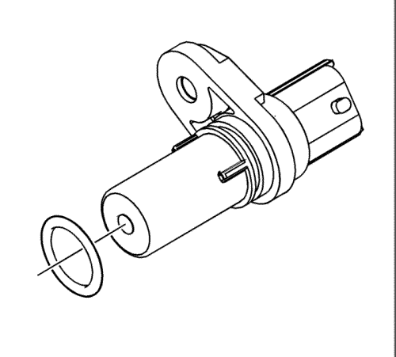
Monte la junta tórica NUEVA del sensor de posición del cigüeñal, en caso de que esté averiada.
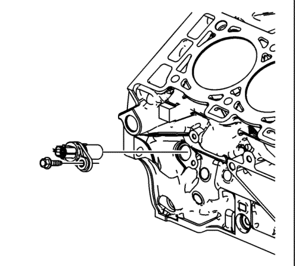
Instale el sensor de posición del cigüeñal.
Coloque el tornillo del sensor de posición del cigüeñal y apriételo a 10 N·m (89 lib. pulg.).
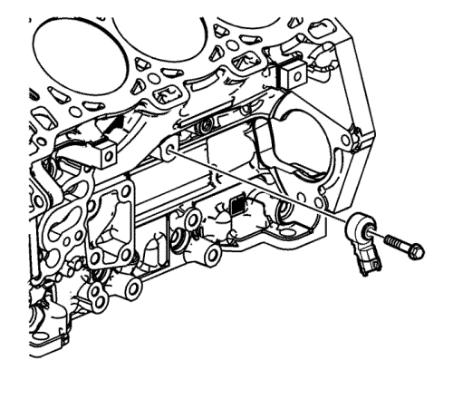
Coloque el sensor de picado izquierdo en el bloque motor, como se muestra.
Monte el tornillo izquierdo del sensor de picado y apriételo hasta 25 N·m (18 lib. pie).
Asegúrese de que la orientación del sensor es la correcta.
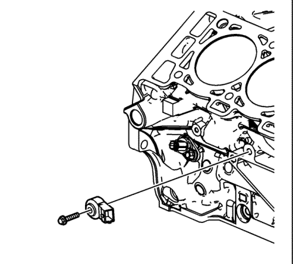
Coloque el sensor de picado derecho en el bloque motor, como se muestra.
Coloque el tornillo del sensor de de picado derecho y apriételo a 25 N·m (18 lib. pie).
Asegúrese de que la orientación del sensor es la correcta.
Monte el cartucho del calefactor del bloque, si lo hay.
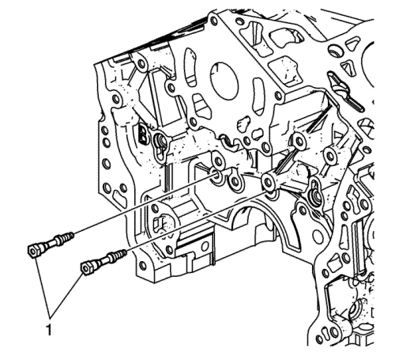
Monte los pernos de la tapa delantera del motor (1) y apriételos hasta 15 N·m (11 lib. pie).